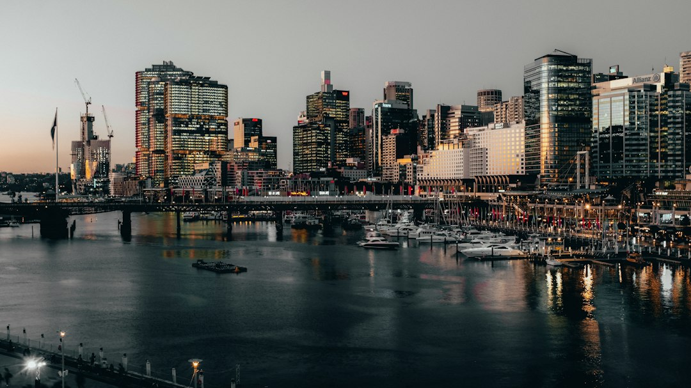

A Sydney website brief should settle the buyer goal, platform, ownership and scope before design starts. The source provider describes 8 service paths, including custom builds, WordPress, eCommerce, redesigns, landing pages, SEO-ready pages and care plans. It also says a standard business website typically takes 4 to 12 weeks, depending on site size, content readiness, approvals, testing and development needs.
For Sydney owners comparing web design sydney options, the useful starting point is not a visual style, but the enquiry, sales or redesign problem the site must solve.
Web Design Sydney Explained
Web Design Sydney Australia frames a strong local website around trust, mobile performance and a simple enquiry path. That is a useful lens for any Sydney business because the site has to answer a buyer quickly: what is offered, who it suits, what the likely investment looks like, and what action comes next.
The source page separates local searchers, referral visitors and returning customers. That distinction matters when shaping page order. A referral visitor may need proof and contact details fast. A local search visitor may need service fit, suburb relevance and evidence before enquiring. A returning customer may simply need a clearer path to support, quote details or product information.
The first brief should therefore describe the business problem in plain language. Is the goal more qualified enquiries, a cleaner quote path, a stronger platform, or a redesign that protects pages already ranking? Those four outcomes lead to different decisions about copy, navigation, calls to action and technical setup.
Choose the build type by operating need
The published service range gives a practical decision tree rather than a one size fits all template. A small business website suits a leaner brochure or enquiry build. A custom site is more appropriate when the offer, buyer journey or proof requirements need bespoke structure. WordPress suits teams that want editable content without calling a developer for routine updates.
Online sellers have different pressure points. The source page names Shopify and WooCommerce for eCommerce builds, with speed, trust and conversion as the aim. A campaign may need a focused landing page instead of a full site. An ageing site may need a redesign that modernises the experience without losing search rankings already earned.
Useful briefing inputs include:
- page count and which pages already matter for search
- whether products, bookings, forms or integrations are needed
- how ready the copy, images and product data are
- who will update content after launch
- whether redirects, care plans or maintenance are part of scope
Sydney context is about buyer fit, not suburb stuffing
The source page names Sydney CBD, Surry Hills, Parramatta, North Sydney, Chatswood, Bondi Junction, Newtown, Manly, Mosman and Balmain, but its stronger point is that Sydney is not one market. A professional practice in North Sydney, a cafe in Surry Hills and an online retailer in Chatswood need different proof, page structure and calls to action.
That is a better use of locality than repeating suburb names. A professional practice may need service detail, trust signals and a calm enquiry path. A cafe may need fast mobile scanning and location clarity. An online retailer may need product confidence, cart clarity and platform performance. The design decision follows the customer situation.
For another concise view of the same local topic cluster, see this Sydney website planning guide. Use it as a cross-check for how the brief stays practical when the location is broad but the buyer decision is specific.
Ownership and pricing questions to settle early
The source page is explicit about common project basics: domain, content and finished site ownership should stay with the client, and logins can be handed over. It also says indicative pricing and clear scope should appear before commitment. That does not give a fixed price, but it does identify the levers that move cost.
Ask what is included before comparing quotes. Content writing, images, hosting, maintenance, product setup and custom features can change the work. The page also notes that several written quotes are commonly advised and that each quote should make inclusions clear.
A good quote conversation should answer these questions:
- Who owns the domain, hosting, content and finished site?
- Which platform is being used, and why does it fit operations?
- What content, images, products and approvals must the business supply?
- Are backups, updates, security and support included after launch?
- How are redirects handled if an existing site is being redesigned?
What a realistic timeline should include
The source page says a standard business website typically takes 4 to 12 weeks to design and build. It also says timing depends on site size and how quickly content and approvals are provided, with discovery, design, development, testing and content creation included in the overall process.
That range is most useful when treated as a planning guide, not a promise. A small site with approved copy can move differently from a larger build with eCommerce, custom features, product data or a redesign that needs search-sensitive redirects. Delays often sit outside the visual design itself, especially where copy, image selection and decision making are unfinished.
The page also avoids first-page ranking guarantees. Its position is that clean foundations help, while ongoing search growth depends on content, authority, competition and time. That is an important expectation to set before a business treats a new design as a complete marketing strategy.
- Describe the business problem. State whether the site needs more qualified enquiries, a cleaner quote path, a stronger platform or a careful redesign.
- Map the buyer groups. Separate local searchers, referral visitors and returning customers so the page order matches how each group decides.
- Choose the platform. Compare WordPress, Shopify, WooCommerce and custom options against ownership, updates and daily operations.
- Price the scope. Ask how page count, content, product data, integrations, redirects and care affect the quote.
- Confirm handover. Settle domain ownership, hosting, logins, editable content and support before build choices are locked.
| Option | Best fit | Watch before briefing |
|---|---|---|
| Small business site | Sydney SMEs and sole traders needing a practical enquiry presence | Confirm page count, copy readiness and handover expectations |
| Custom build | Businesses needing bespoke structure around their offer and customer journey | Clarify scope, integrations and who owns the finished assets |
| WordPress | Teams wanting editable pages without a developer on call | Confirm training, admin access and ongoing update responsibility |
| eCommerce | Shopify or WooCommerce stores focused on speed, trust and conversion | Prepare product data, payment needs and fulfilment details |
| Redesign | Ageing or underperforming sites with existing search value | Map useful pages, redirects and ranking protection before rebuild |
Common questions
How long does a standard business website usually take? The source page says a standard business website typically takes 4 to 12 weeks, including discovery, design, development, testing and content creation. Timing depends on site size and how quickly content and approvals are supplied.
What should a Sydney business compare before choosing a designer? Compare portfolio fit, communication, written scope, platform choice, ownership terms and what is included in content, images, hosting and maintenance. The source page also stresses clear pricing before commitment.
Is WordPress always the right platform? No. The source page lists WordPress, Shopify, WooCommerce and custom builds. The right choice depends on operations, ownership, product needs, content editing and the job the site must do.
Can a redesign protect existing search rankings? The source page offers redesigns that aim to modernise an ageing or underperforming site without losing search rankings already earned. It also notes there are no first-page guarantees, because search growth depends on content, authority, competition and time.
This guide covers Sydney website briefing, platform choice, ownership, scope, timing and redesign questions for business owners comparing local providers.